A patient explains their problem at registration, again to the nurse, again to the doctor. My work was designing the layer that carries one case through all of them, with AI helping and clinicians still deciding.
This project is confidential, so this page is the short version. If you're a hiring manager, reach out and I'll walk you through the full case study.
highlights
Four people touch one case, patient, nurse, resident and OPD head, and each defines a good outcome differently. The waiting was the symptom; the real problem was information being re-collected at every handoff. So the design captures the story once, in the patient's own words, and re-presents it at the depth each role can act on.
retrospective
The hardest decisions here were not about screens. They were about where the system should stop: what it is allowed to conclude, what it must hand to a clinician, and how it behaves when it is unsure. Designing that boundary made the product more trustworthy than a more confident interface would have been.
Success was never getting people to use AI. It was removing repetition and friction while keeping clinical judgement in the loop.
A patient explains their problem at registration, again to the nurse, again to the doctor. My work was designing the layer that carries one case through all of them, with AI helping and clinicians still deciding.
the short version
An OPD at this scale is not a clinic. It is a queue with a clinical process running inside it.
AIIMS Delhi's outpatient department sees around 10,000 patients a day, with an average wait of about four and a half hours and roughly 22% of patients ending up in the wrong department first. Everyone in the building already knows this. Nobody has spare minutes to give a new tool.
patients a day through one OPD
average wait before being seen
routed to the wrong department first
How might we move a patient's information through the OPD without making the patient, nurse or doctor repeat the same work?
The design question the whole project answers.
The wait is what people complain about. What actually degrades the care is what happens to the information along the way: it is told, written down, interpreted and handed over several times before anyone can act on it.
Every handoff is another chance for something to be missed, misread, or asked again. So I mapped the existing route first, and marked where the case thins out.
Four retellings before anyone can act, and something thins out at every arrow.
The same AI output had to satisfy four people who do not agree on what good looks like.
Patient
First AIIMS visit, speaks mostly Bhojpuri.
"I just don't want to explain my problem four times."
Needs to explain once, in her own words.
Senior nurse
11 years in this OPD. Runs the queue. Selective adopter.
"I'll use it if it makes the queue move."
Needs fast review, prioritisation, control.
Resident
2nd-year Internal Medicine. Already at capacity.
"Don't give me another screen. Give me four minutes back per patient."
Needs a clinical pre-read, not a dashboard.
OPD head
Department champion. Risk-averse, data-driven.
"Show me the reduction in wrong-routing."
Needs traceability, safety, measurable outcomes.
The same AI output could not be designed around one user's definition of "good".
I studied how information is collected and handed over today, how nurses prioritise a moving queue, what a doctor actually reads before a consultation, and where language, literacy, connectivity and failure get in the way. Then I wrote down what each finding obliges the design to do.
Before → after
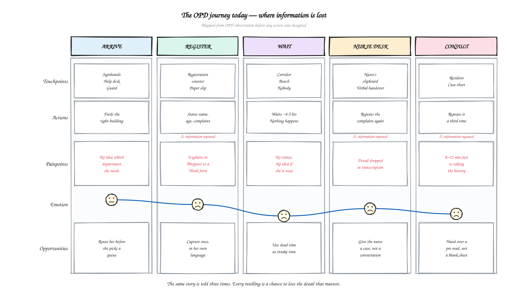
What I found, and what it obliged
How those implications became the flow
Identity and department come from the hospital's own appointment record, so the intake starts with context instead of asking for it.
→ chunk 01, entry
The conversation replaces the form, reports stay optional, and a failed upload loops back into the same step rather than the start.
→ chunks 02 and 03, prepare and upload
Nothing reaches the doctor unapproved: the summary is shown back to the patient, and rejecting it returns her to the conversation.
→ chunk 04, summary and handoff
The goal was never to redesign the OPD. It was to fit AI into the workflow that already exists.
Rather than four separate interfaces, I treated it as one case moving through four connected layers. That is the UX architecture.
Four moments carried the design weight. Each one: what the flow does, what the patient sees, and why it works that way.
the goal → get the right patient into the right department before the AI says a word
Login with UHID and OTP, land on the dashboard, choose the OPD, and only then open the department-specific conversation. The context is established by the hospital's own identifiers, not by asking the patient to describe where she belongs.
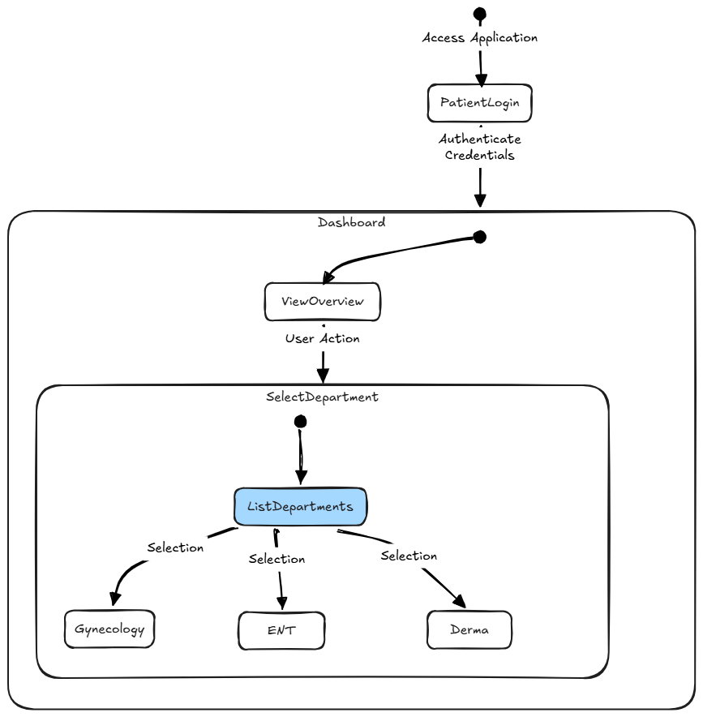
UX decision
Patients need to know where their query belongs before starting a conversation. Showing the available departments upfront makes the next step clear and reduces uncertainty about where to begin.
Picked from her real appointments, so the first question can already be department-specific.
UX decision
The first version explained the product before she had done anything. I moved the guidance into the step where it is needed, which is why each screen carries one line of "here is what this step is".
A patient waiting in an OPD doesn't need a tutorial. She needs to know what to do next.
UX decision
Language is chosen at the top of the very first screen and holds for the whole journey: English, Hindi, Marathi, Tamil, Bengali. It changed how questions were written and spoken, not just which string was shown.
A translated clinical term is still a clinical term.
the goal → let reports add context without ever becoming a gate
Documents make the summary better, so the flow asks for them. The branch is symmetrical: no reports goes straight to the chat, reports go through upload and land in the same conversation. I mapped the upload branch separately because that is the one place in the intake that can genuinely break.
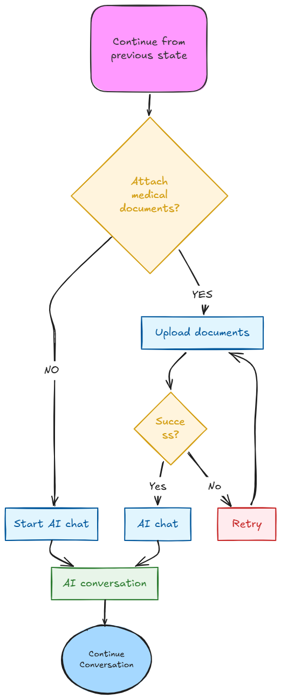
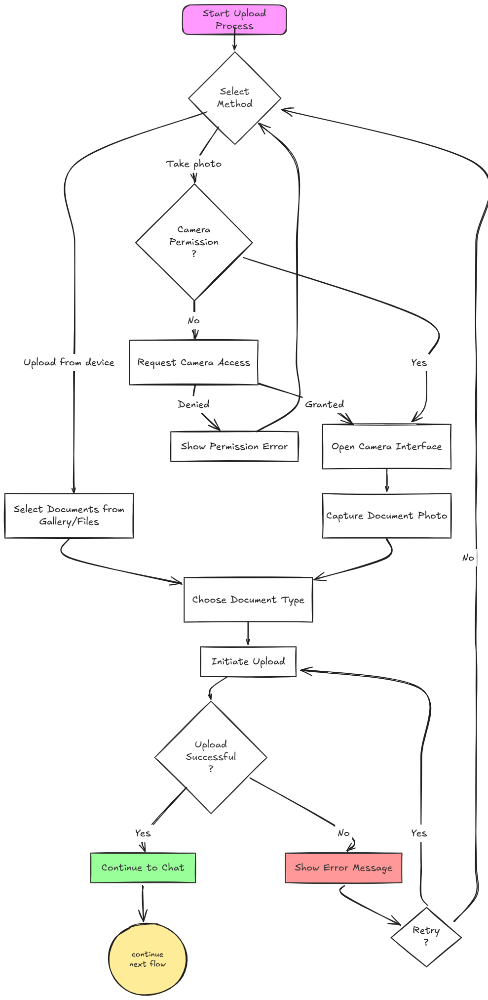
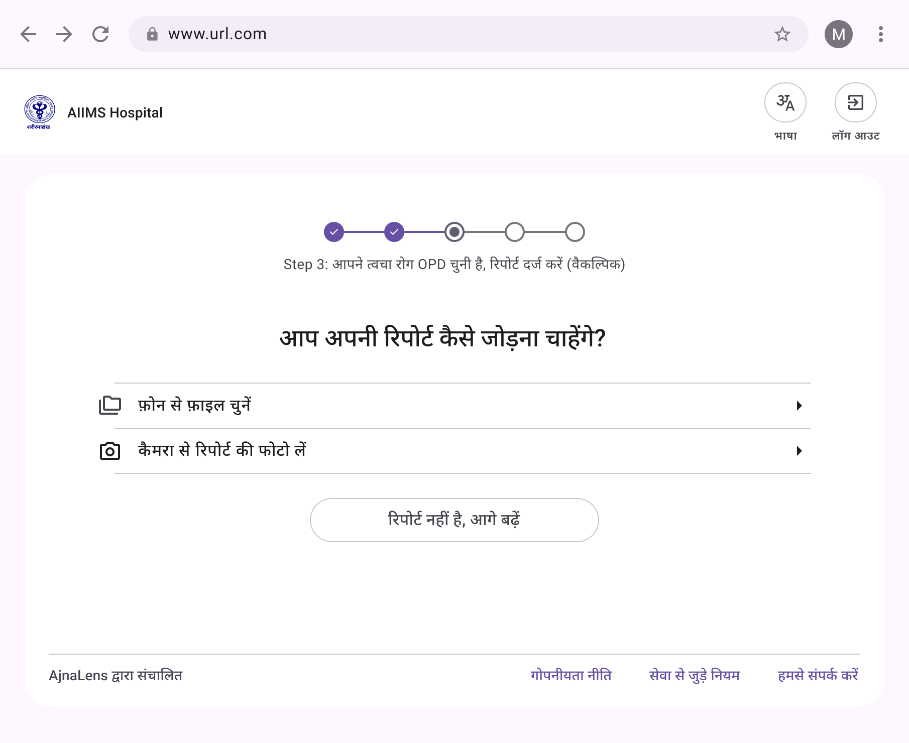
01
Choose a file, or take a photo
Camera permission is asked at the point of use, not upfront.
02
Label the document type
Prescription, lab report, discharge summary or other. The type is what makes it useful downstream.
03
Validated, then attached
One size limit per file, no cap on how many she brings.
03b
Failed → error → retry
Retry re-enters the upload step, never the beginning.
UX decision
A patient with no paperwork must never be stuck at this step. Skipping goes straight to the chat, and the summary is still produced.
Reports enrich the case. They don't authorise it.
UX decision
A refused camera permission, a file that won't validate or an upload that drops all return to the same step with the work kept, and the patient can still move forward without the document.
Nothing in the intake is allowed to dead-end the visit.
the goal → nothing reaches the doctor that the patient hasn't agreed with
Either side can end the conversation. The summary is generated and shown back to her: confirm sends it to the doctor, reject returns her to the conversation rather than submitting something she disagrees with.
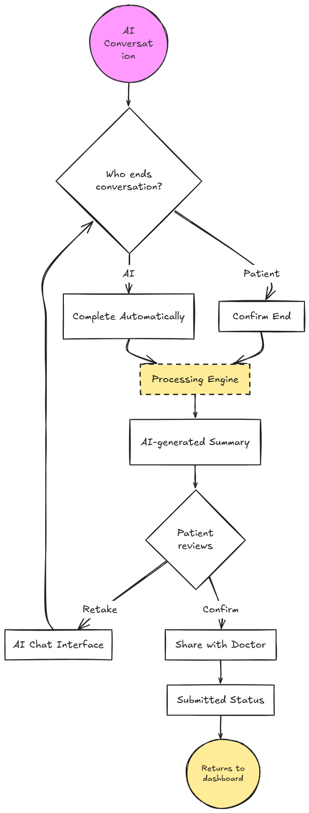
UX decision
The alternative was a long intake form. The conversation asks one thing, waits, and moves on, so she never has to hold five unanswered questions in her head at once.
A form asks everything at once. A conversation asks what it needs next.
UX decision
Simplifying a form still leaves the keyboard. The conversation step is listen → speak → the system interprets → she confirms → continue, with text as the fallback.
The point was never to feel AI-powered. It was to let her describe the problem in her own words.
UX decision
The AI writes the clinical summary, she approves it, the doctor receives it. Rejection is a one-tap path back into the conversation, not an error.
That veto is what makes the handoff trustworthy at both ends.
the goal → the intake should end as clinical information, not as a finished form
Confirming shares the summary with her doctor and returns her to the dashboard. That is the moment the patient experience becomes the doctor's pre-read.
01
Confirm the summary
The last thing she does is agree with what will be read about her.
02
Shared with the doctor
Attached to the appointment, with her uploaded documents.
03
Submission confirmed
Plain language: it has been sent, nothing else is needed now.
04
Back to the dashboard
She can still see the appointment, and add a second OPD if she has one.
UX decision
Everything she said, and everything she uploaded, moves into the clinical workflow as one record attached to the appointment. The whole point of the intake is that the story survives the handoff.
The submission is not the end of the flow. It is the beginning of the doctor's.
The patient flow only solves half the problem. The information now has to be useful to the doctor without becoming another workflow to manage.
Dr. Priya sees a patient every few minutes. If reading the summary costs more time than taking the history herself, she will not open it twice. So I mapped her side of the workflow before designing a single screen for it, including what she does when the summary is missing or half-formed.
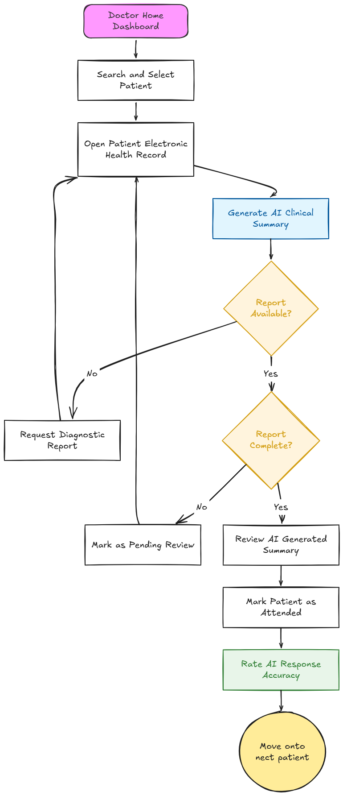
the goal → reach the right record in one action, whichever way the day is going
Verification is by employee code and OTP, the same pattern as the patient side. The dashboard then opens on today's list, split by attended and not attended, with a patient ID search sitting directly above it.
01
Doctor verification
Employee code, OTP, with a staff fallback.
02
Today's patients
Attended and not-attended counts, at a glance.
03
Or search by patient ID
For anyone who isn't on today's list.
04
Open the record
One tap from either route.
UX decision
The expected path is today's appointment list, but OPD days do not run to plan: patients arrive early, get re-routed, or come back after a test. Direct lookup by ID sits at the same level as the list rather than behind a menu, so neither way is the exception.
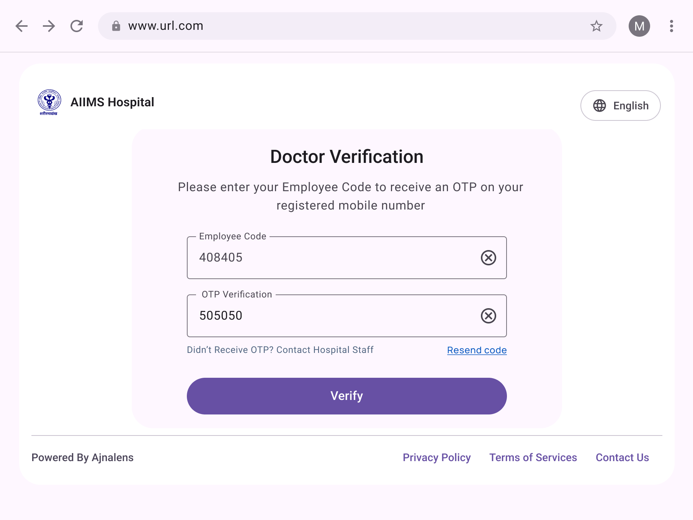
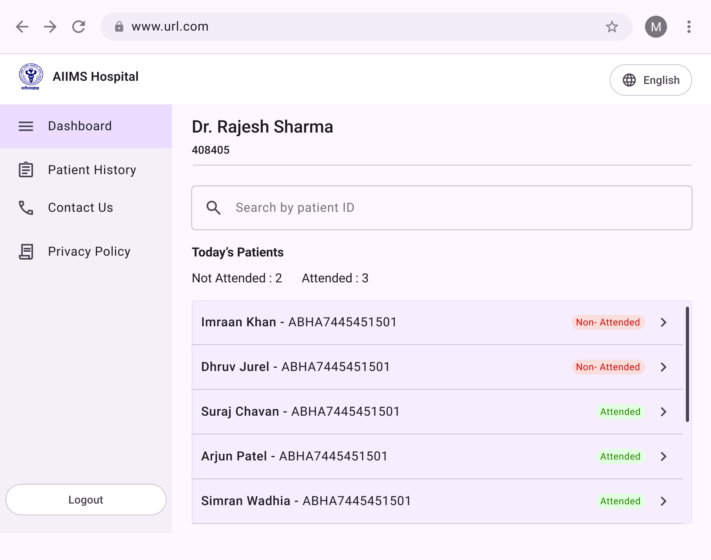
the goal → everything she needs before the consultation, in one screen she can scan
The record opens on the latest summary, with earlier ones listed beside it. Structure is fixed: summary, primary concern, history of present illness, relevant medical history, medications, and the patient's own documents one tap away. Two branches are designed for: no report yet means she can request one, and an incomplete report is marked pending review rather than read as fact.
UX decision
She gets what she needs to walk into the consultation prepared, in the order a clinician reads it, with the AI disclaimer stated plainly. Depth stays available (previous summaries, the original documents) but nothing is shown just because the system knows it.
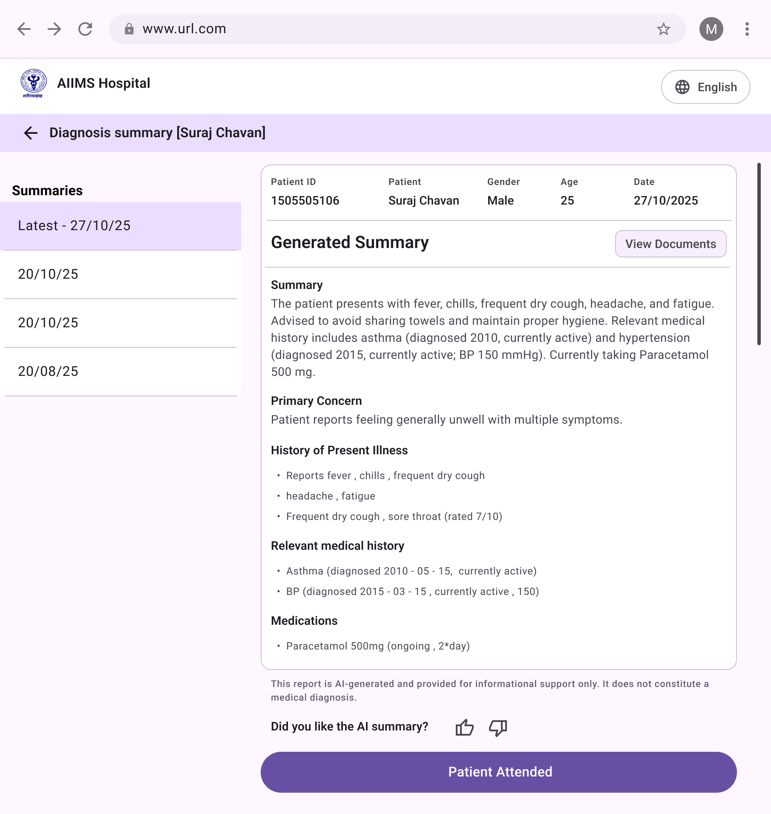
the goal → close the patient, and tell the system whether it helped
Marking the patient attended updates the queue for everyone watching it, and the same screen carries a one-tap judgement on whether the AI summary was any good. Both controls sit at the foot of the pre-read above, where the doctor already is.
01
Mark patient attended
Status flips on the dashboard immediately.
02
Confirmation
Visible enough to trust, quiet enough to ignore.
03
Rate the AI summary
Thumbs up or down, no form, no rating scale.
04
Next patient
Straight back to the list.
UX decision
The summary supports the consultation, it does not conclude it. The feedback control is placed at the point where the doctor has just judged the summary against the actual patient, which is the only moment that rating means anything.
If rating the AI costs more than one tap, it will not happen on a 60-patient day.
A clinical workflow cannot be designed on the happy path. These are the breaks I mapped recovery for, on both sides of the handoff.
Upload fails
Error → retry into the same step → or continue without it
A bad photo costs one action, not the whole intake.
She leaves mid-way
Progress saved → return → resume
A four-hour visit shouldn't reset the intake.
No report for the doctor
Report not available → request a diagnostic report
The consultation continues the way it always did, with an action instead of an empty screen.
Half-formed summary
Incomplete → mark pending review → back to the record
An incomplete summary is labelled as incomplete, never presented as the full picture.
Every one of these was drawn into the main flow diagram rather than kept in a separate edge-case list, because in a hospital the recovery path is the experience about as often as the happy path is.
I didn't treat the model as a box that returns an answer. I mapped where it may interpret, and where a human has to stay in the loop.
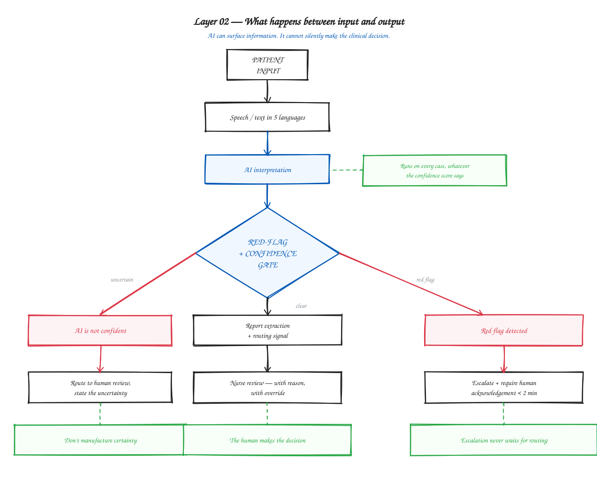
The output is a recommendation that supports the workflow. It never replaces the clinical judgement at the end of it.
When the system cannot interpret something confidently, the interface says what happens next instead of smoothing it over.
If a clinician disagrees with the AI's reading they should be able to change it without fighting the interface: AI suggests → clinician reviews → clinician overrides → the case moves on.
So the expected 10–20% clinician override was never something to design away. A system nobody challenges may not be trusted. It may just be a system people stopped reading.
These are the targets we set to judge the experience, measured from the journey outward rather than from model accuracy inward. They are success criteria, not results we have reported.
Less friction in the intake
QR scan → intake started
intake → submitted
step-level drop-off
errors per 100 sessions
Faster movement through the OPD
time to correct routing
wrong-routing
resident history-taking
Human and AI together, the ones that matter most
clinician override, expected not eliminated
AI and clinician concordance
urgent alert acknowledgement
AI-attributed adverse events
Success was never getting people to use AI. It was removing repetition and friction while keeping clinical judgement in the loop.
AI UX is boundary work
The interesting decisions weren't about making AI look impressive. They were about what it may do, where it may be unsure, when it should stop, and who takes over.
The hard problems sat between screens
Handoffs, language, uncertainty, failure and trust. None of them belong to a single screen, which is exactly why they get skipped.
What I'd do differently
Get into the real OPD earlier and test under actual queue pressure, especially with nurses and with patients who have low digital confidence. That is where the voice and onboarding assumptions would either hold or break.